安徽农业大学高通量计算服务软件 AHCSS 简介
一、软件概述
AHCSS (Anhui Agricultural University High-throughput Computing Service Software)是由安徽农业大学传感器与系统集成实验室开发的一款集成化、自动化计算材料学工具软件。该软件旨在解决第一性原理计算流程中存在的操作繁琐、数据管理混乱以及远程服务器交互不便等痛点。通过集成模型查看、元素替换、气固界面构建及远程作业自动化处理四大核心功能，AHCSS将科研人员从大量重复性的文件操作和命令行交互中解放出来，显著提高计算研究的工作效率。
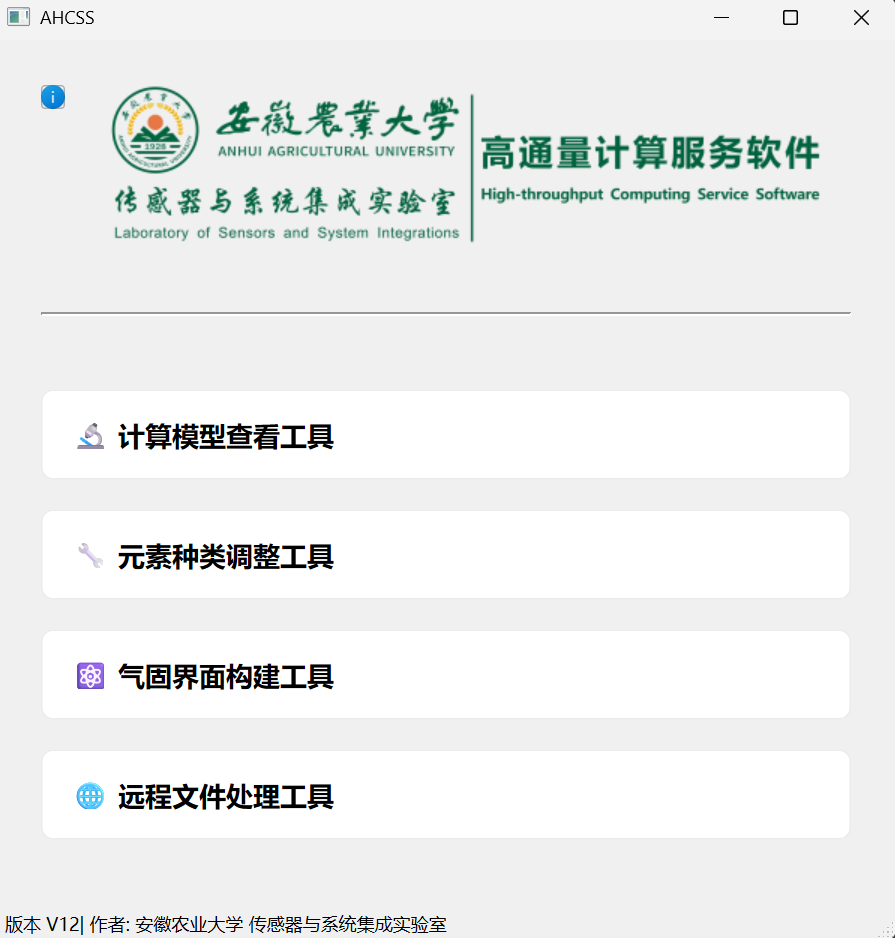
AHCSS软件
二、核心功能模块
1. 计算模型查看工具
功能定位： 该模块专注于晶体结构文件（POSCAR）的可视化管理。
核心功能：
POSCAR文件查找：自动递归扫描用户指定的根目录，快速定位所有包含POSCAR文件的子文件夹。
集成VESTA可视化：与专业的晶体结构可视化软件VESTA无缝集成。用户只需点击对应文件夹按钮，即可自动调用VESTA打开其中的POSCAR文件。
使用步骤：
配置VESTA路径 → 配置需浏览的文件夹 → 选择对应文件夹按钮，自动调用VESTA打开。
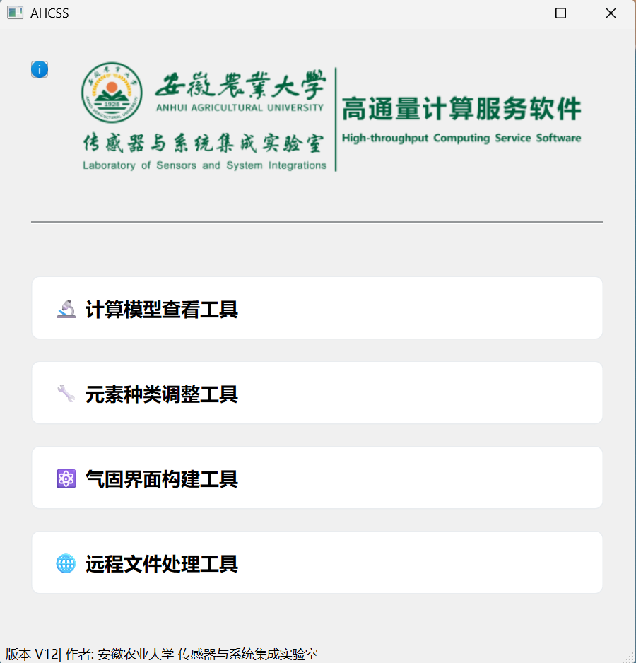
图1.1 步骤一：配置VESTA路径
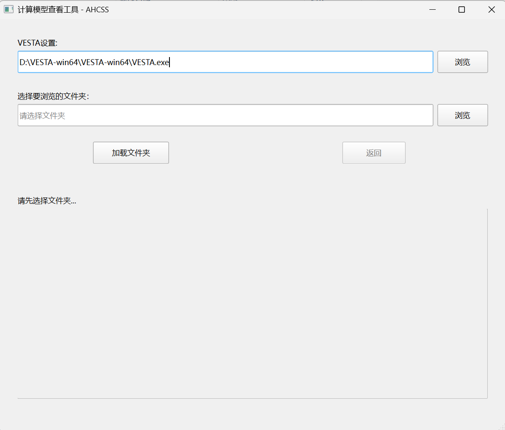
图1.2 步骤二：配置需浏览的文件夹
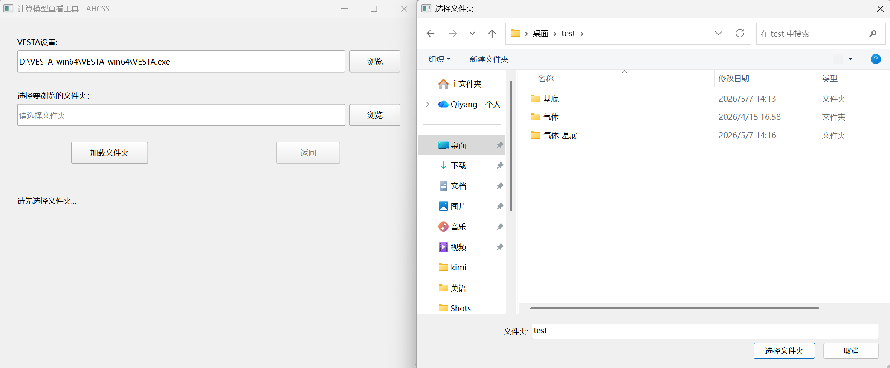
图1.3 步骤三：选择对应文件夹按钮，自动调用VESTA打开
2. 元素种类调整工具
功能定位： 批量替换或修改计算模型中的元素种类。
核心功能：
智能元素识别与替换：用户指定目标根目录后，工具会自动找出所有POSCAR文件中的现有元素列表。用户只需输入目标元素和替换后的新元素，程序即可在所有相关的POSCAR文件中进行精准替换并创建以新元素命名的新文件夹，将修改后的POSCAR文件存入其中。
可视化元素周期表：内置交互式元素周期表对话框，用户可通过点击元素符号直接选择待替换的元素，无需手动输入。
使用步骤：
配置需修改元素的文件夹路径 → 填入被替换的元素 → 在元素周期表选择新替换元素 → 完成替换。
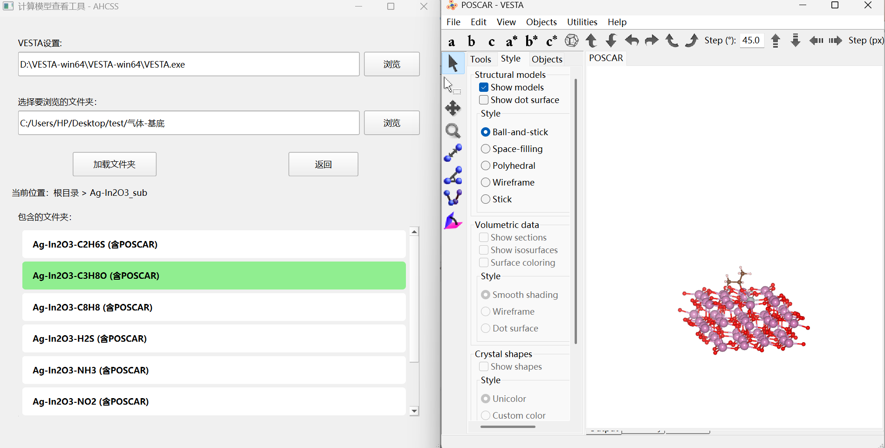
图2.1 步骤一：配置需修改元素的文件夹路径
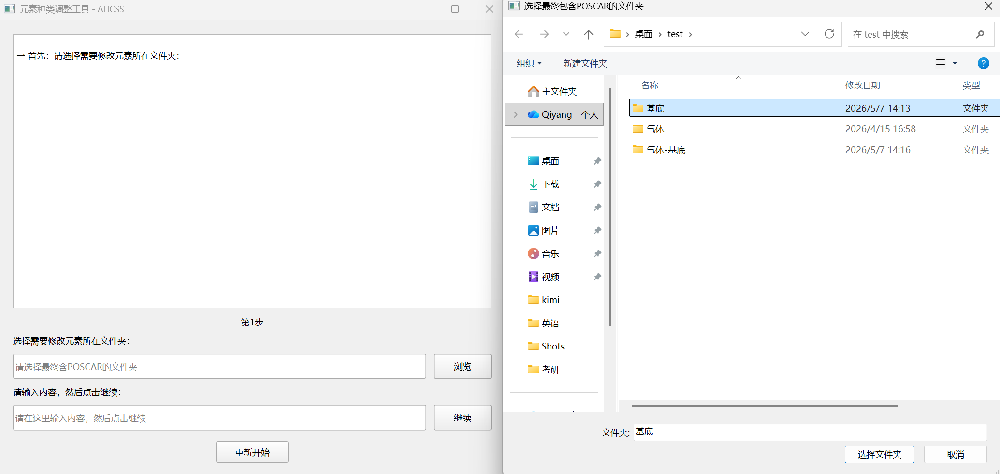
图2.2 步骤二：填入被替换的元素
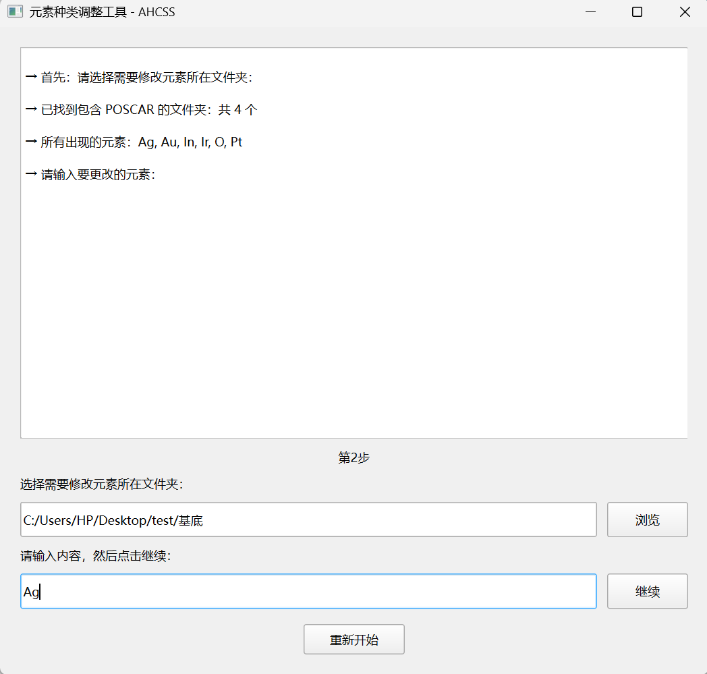
图2.3 步骤三：在元素周期表选择新替换元素
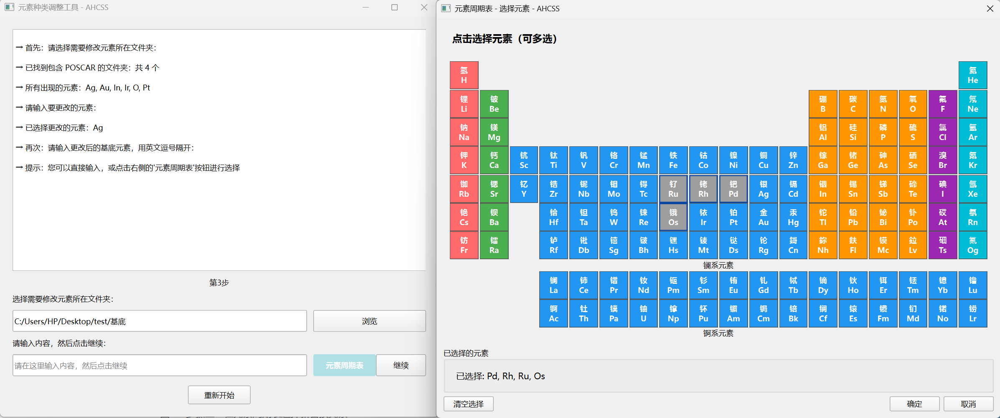
图2.4 步骤四：完成替换
3. 气固界面构建工具
功能定位： 自动化构建气体分子在基底表面的吸附模型。
核心功能：
自动化组合与目录生成： 用户分别指定包含多种气体分子POSCAR的文件夹和包含多种基底POSCAR的文件夹后，工具会自动排列组合，为每一种“气体-基底”对创建一个独立文件夹。
灵活的吸附距离设置：支持用户以埃（Å）为单位输入具体的吸附距离偏移量，也支持使用默认的分数坐标值。
中心原子定位与坐标转换：用户可通过输入分数坐标或指定基底POSCAR中的原子行数两种方式，精确定位吸附中心。内置坐标转换算法，能将气体分子的坐标从其原始基向量系统，精确转换到基底材料的基向量系统中，并依据设定的吸附距离，将气体分子准确放置在基底上方，生成可直接用于VASP计算的完整POSCAR文件。
使用步骤：
设置吸附距离和连接符 → 选择气体和基底文件夹 → 填入中心原子输入方式 → 填入中心原子相关数据 → 等待处理 → 完成构建。
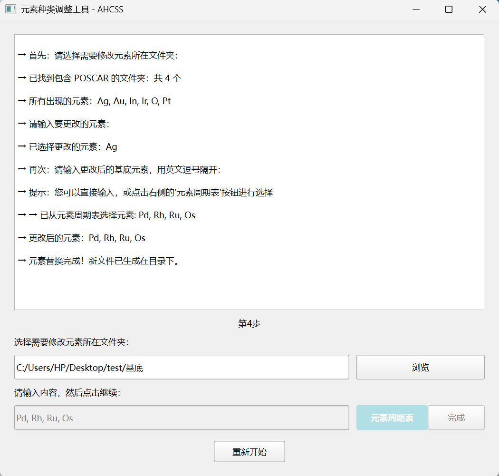
图3.1 步骤一：设置吸附距离和连接符
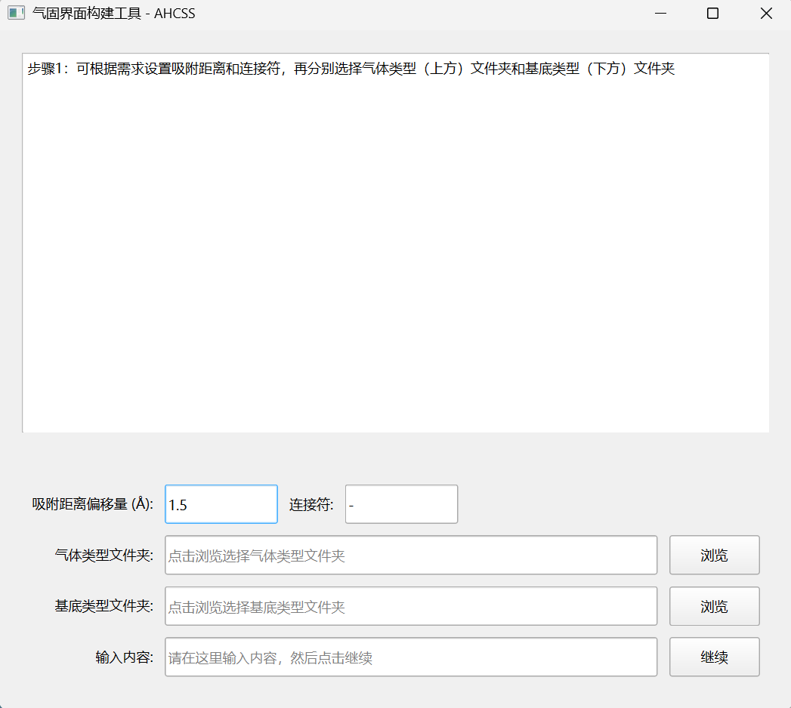
图3.2 步骤二：选择气体和基底文件夹
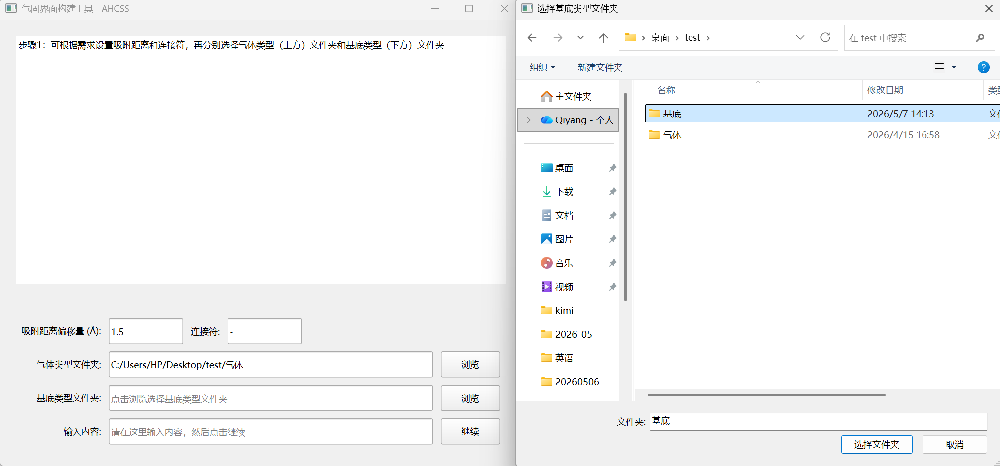
图3.3 步骤三：填入中心原子输入方式
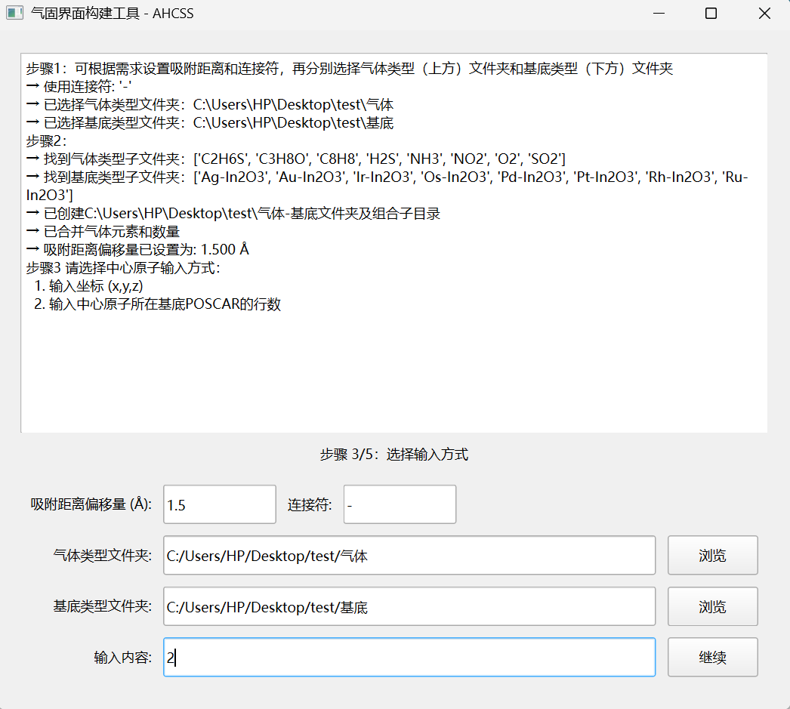
图3.4 步骤四：填入中心原子相关数据
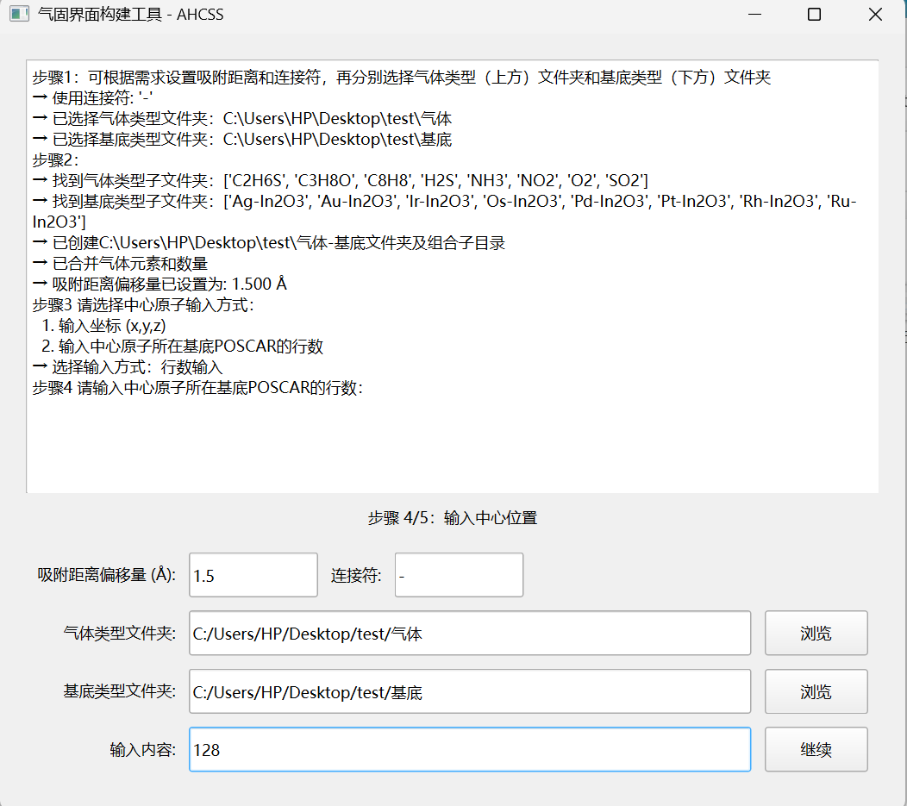
图3.5 步骤五：等待处理
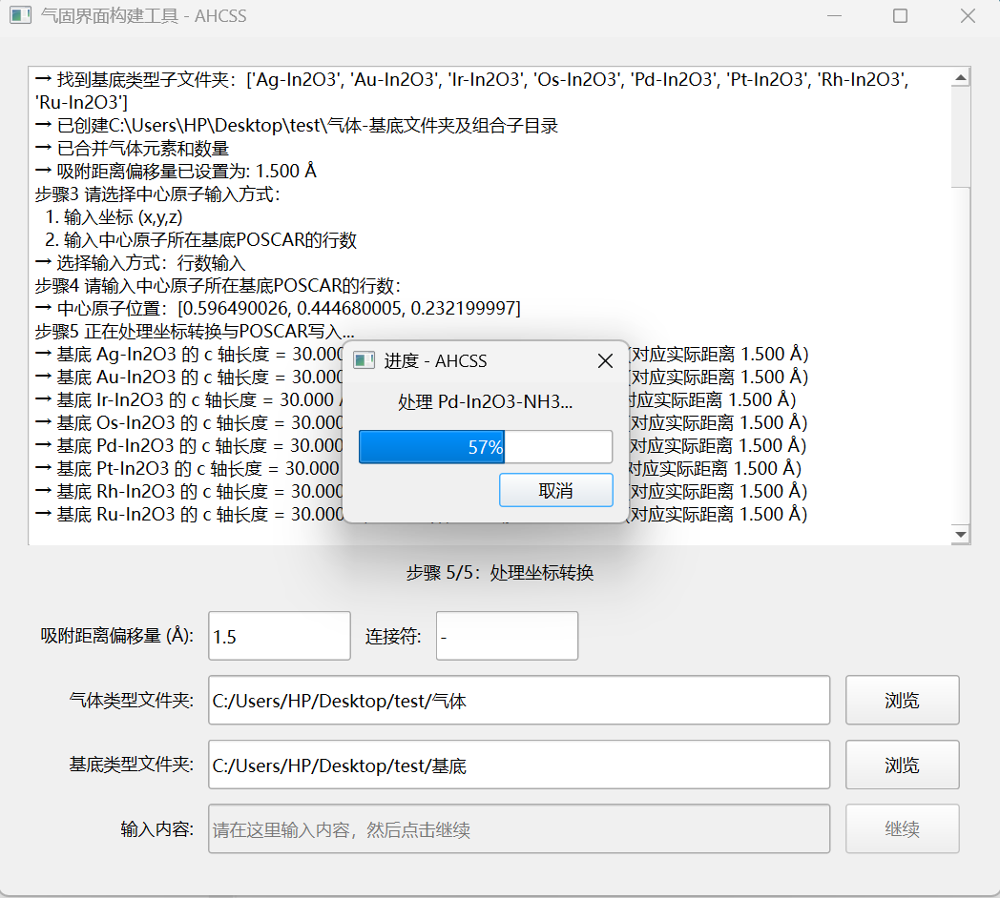
图3.6 步骤六：完成构建
4. 远程文件处理工具
功能定位： 该模块是连接本地计算资源与远程超算中心的桥梁，实现了对集群的全图形化操作。
核心功能：
便捷的SSH连接管理：支持通过SSH密钥连接到远程超算中心，连接信息可本地保存，方便下次使用。
图形化远程文件管理：
提供类似本地文件浏览器的界面，支持文件和文件夹的浏览、上传、下载、删除。
支持多文件/文件夹批量上传下载，并显示实时传输进度。
支持递归下载，可完整下载远程文件夹及其所有子内容。
远程命令行：内置远程终端，允许用户在不离开图形界面的情况下执行自定义命令。
远程批量任务处理：将复杂的Shell命令序列封装为图形界面操作，支持批量执行以下九个步骤：
复制公共输入文件： 将Public-input目录中的计算输入文件（如INCAR, KPOINTS）一键复制到所有待计算的任务子目录中。
批量生成POTCAR： 自动读取每个任务子目录POSCAR中的元素信息，并调用远程服务器上的qvasp命令批量生成对应的POTCAR文件。
批量提交作业： 为所有任务子目录批量提交 Slurm 作业脚本。
收集能量数据： 批量运行qvasp -e命令，从计算结果中提取能量和收敛信息，并自动汇总成一个CSV文件，方便数据分析。
生成并收集TDOS： 批量调用vaspkit生成总态密度（TDOS）数据，并将所有结果收集到TDOS_result文件夹。
生成并收集PDOS： 批量生成分波态密度（PDOS）数据，并收集到PDOS_result文件夹。
生成ACF文件： 批量执行Bader电荷分析命令，为每个任务生成ACF电荷分析文件。
DCD分析准备-目录拆分： 针对已完成计算的“气体-基底”混合体系，自动将其拆分为独立的气体和基底子目录，并为它们准备POTCAR和提交文件，以便分别计算气体和基底在吸附后的性质。
DCD分析准备-收集CHGCAR： 将步骤8中拆分出来的所有子目录的CHGCAR（电荷密度文件）按原结构收集到DCD_results汇总文件夹，便于后续的差分电荷密度分析。
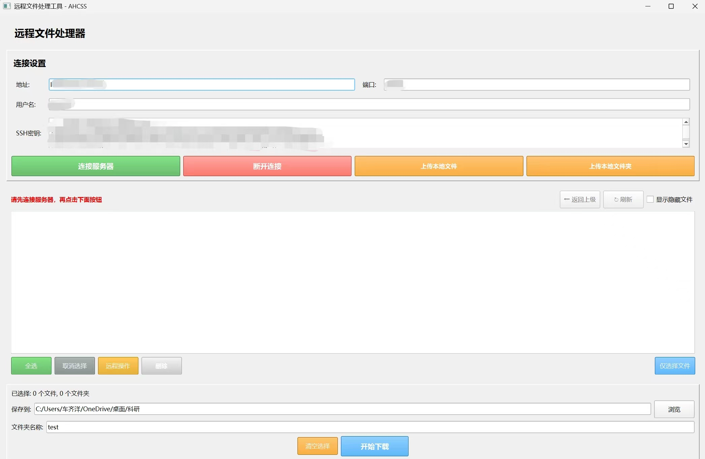
图4.1 远程文件处理工具
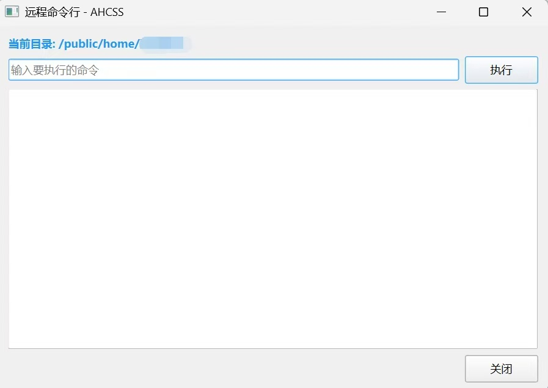
图4.2 远程命令行
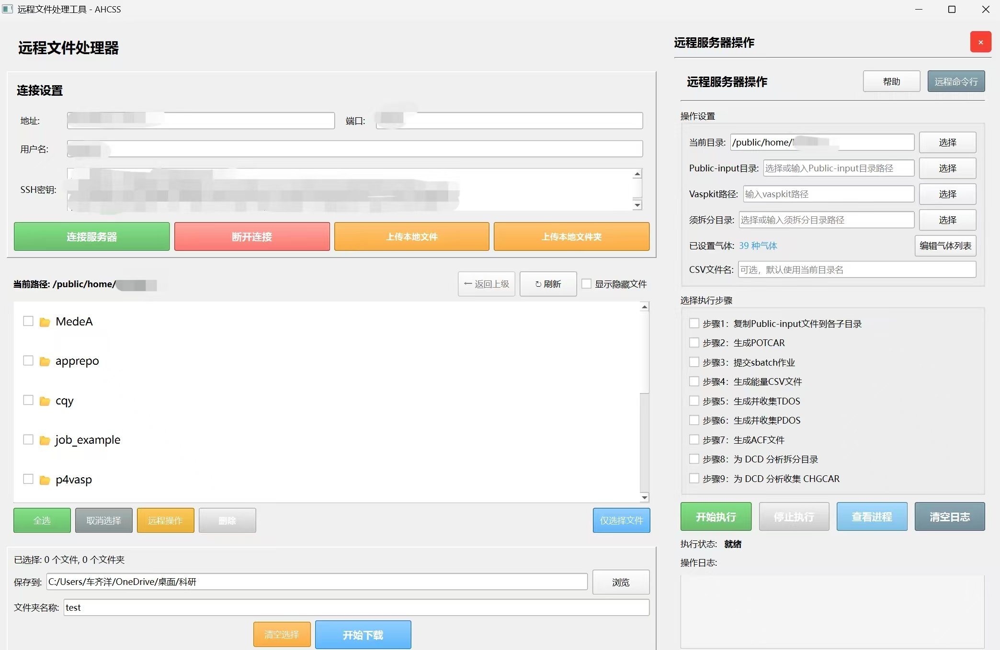
图4.3 远程批量任务处理
三、技术特点
基于PySide6（Qt for Python）开发，支持Windows10/11、macOS及主流Linux发行版。
基于paramiko库，保障了与远程服务器连接的稳定性和数据传输的安全性，支持大文件传输与进度实时显示。
集成NumPy与SymPy库，实现高效的矩阵运算与坐标转换。
各功能工具独立封装，便于维护与扩展提供直观的图形界面与操作引导，并内置详细的帮助文档与操作日志，降低了使用门槛。
四、运行环境
系统与Python：支持Windows10/11、macOS及主流Linux发行版，Python版本≥3.7，需安装 PySide6、paramiko、numpy、sympy 等依赖库。
硬件基础：建议内存4GB及以上以确保图形界面流畅运行。
网络与服务器：远程功能需可访问的SSH服务（支持密钥认证）以及稳定的网络连接，以保证SSH传输大量文件时不中断。
可选组件：可单独安装VESTA用于POSCAR文件可视化
五、适用人群
适用于使用VASP进行第一性原理计算的研究人员，特别是需要批量处理POSCAR、生成POTCAR、远程提交Slurm作业、收集电子结构数据及构建吸附模型的高通量计算场景。